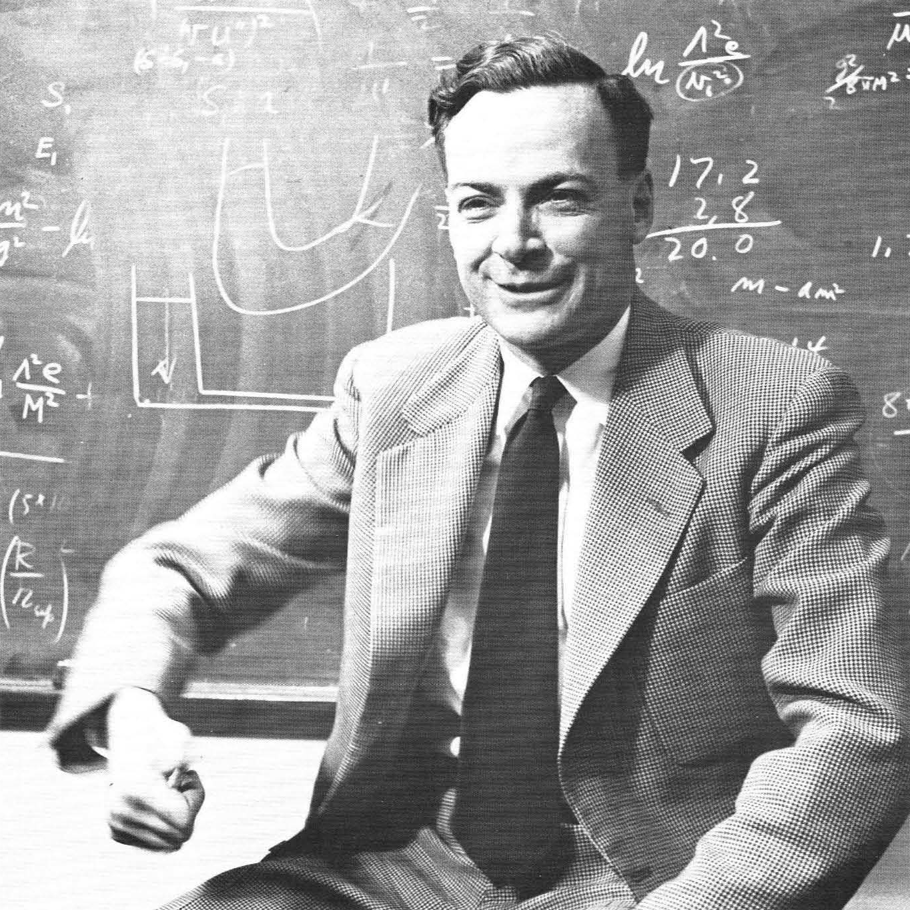
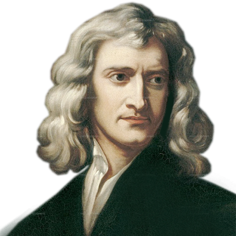

TimeLine
- Antiquity
- Middle Ages
- 16th Century
- 17th Century
- 18th Century
- 19th Century
- 20th Century
- 21th Century
- Future
A BRIEF HISTORY of
CURIOSITY
"Science without religion is lame, religion without science is blind."
- Albert Einstein

"Nature's imagination is so much greater than man's, she's never going to let us relax."
- Richard Feynman

"If I have seen further, it is by standing on the shoulders of giants."
- Isaac Newton
"Look up at the stars and not down at your feet."
- Stephen Hawking

"Somewhere, something incredible is waiting to be known."
- Carl Sagan
Thales of Miletus
Introduced natural philosophy as an explanation of the universe without mythology.
- introduced natural explanations for phenomena
- considered the founder of Western science and philosophy
- replaced myth with reason and observation
624-546 BCE

610–546 BCE
Anaximander
- proposed Earth floats freely in space
- introduced "apeiron" (infinite) as the origin of all things
- early ideas of cosmology and infinity
- influenced scientific speculation beyond Earth
Democritus
- developed atomic theory: matter consists of indivisible atoms
- anticipated modern particle physics
- challenged continuous-matter views dominant at the time
460–370 BCE
384–322 BCE
Aristotle
- defined motion, elements, and the geocentric universe
- introduced teleology (purpose-driven nature)
- dominated physics and astronomy for 2,000 years
- limited progress due to inaccurate models but structured scientific thought
Euclid
- formulated axioms and proofs in Elements
- foundation of geometry, optics, and space modeling
- used in general relativity and spacetime mathematics
c. 300 BCE
c. 250 BCE
Archimedes
- discovered laws of buoyancy, levers, pulleys
- calculated areas, volumes, and pi
- advanced mechanics, hydrostatics, and early calculus concepts
- laid groundwork for classical mechanics
Aristarchus of Samos
- proposed Sun-centered (heliocentric) model
- first known heliocentric theory
- predated Copernicus by 1,800 years
310–230 BCE
276–194 BCE
Eratosthenes
- calculated Earth’s circumference using shadow angles
- early use of geometry and observation in geophysics
- proved Earth was large and round
Hipparchus
- created first accurate star catalog
- discovered precession of the equinoxes
- foundational work in astronomy and celestial mechanics
129 BCE
c. 150 CE
Ptolemy
- systematized geocentric model using epicycles
- published Almagest, combining centuries of astronomy
- became dominant model until the 16th century
- influenced Islamic and European science